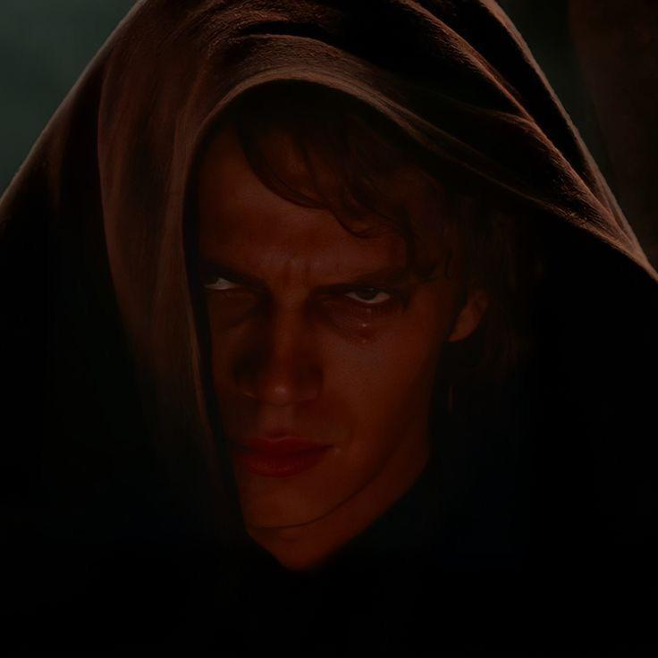

About Anakin Skywalker
Anakin Skywalker was a legendary Jedi Knight of the Galactic Republic and the prophesied Chosen One of the Jedi Order, destined to bring balance to the Force.
Anakin Skywalker with his signature blue lightsaber
Early Life
Anakin was born a slave on the desert planet of Tatooine and was discovered by Jedi Master Qui-Gon Jinn, who believed Anakin to be the Chosen One. After Qui-Gon's death, Anakin was trained by Master Obi-Wan Kenobi, who became a brother/father figure to him. Anakin served as a skilled Jedi general in the Clone Wars.
Characteristics
- Abnormally strong in the Force
- Exceptional piloting skills
- Deep need for "justice"
- Reckless and impulsive nature
- Fierce loyalty and love for those he cares about
- Full of anger and fear
Relationships
- Shmi Skywalker - Mother
- Obi-Wan Kenobi - Jedi Master and friend
- Padmé Amidala - Wife
- Ahsoka Tano - Padawan
- Captain Rex - Clone Commander
- Chancellor Palpatine - Mentor
Fall to the Dark Side
Full of anger, hate, and fear, Anakin turned against the Jedi order, betraying those who had meant the most to him. In a desperate attempt to save the life of his wife, Padmé, he gave himself over to the dark side of the Force and became Darth Vader.

"...You didn't kill Anakin Skywalker. I did."